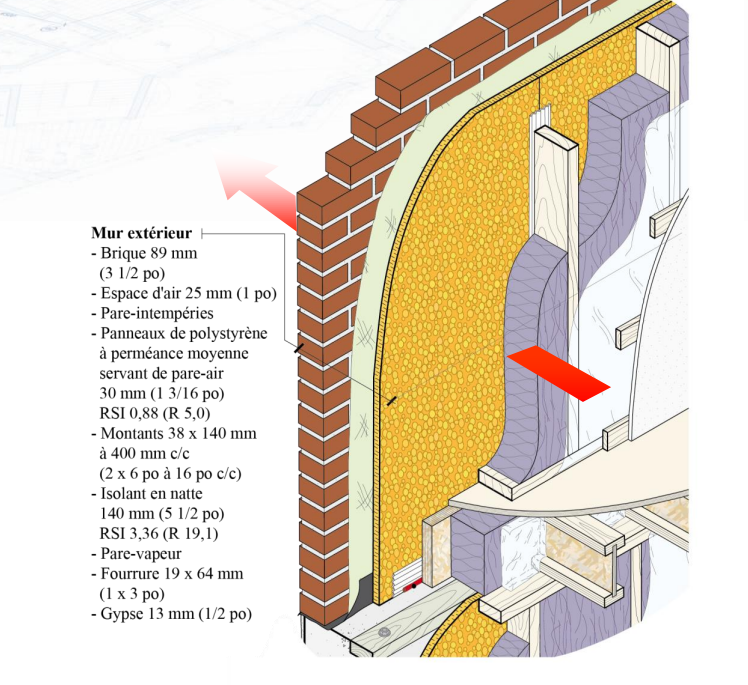
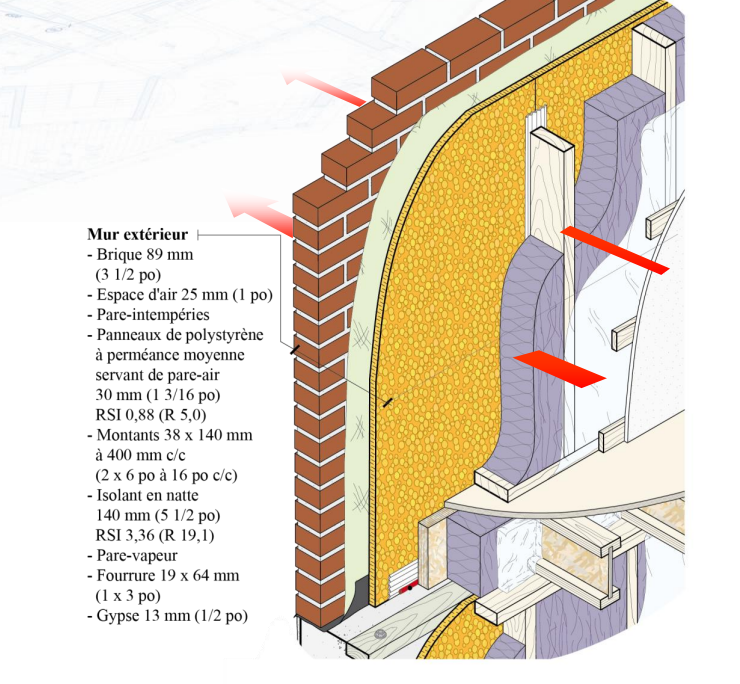
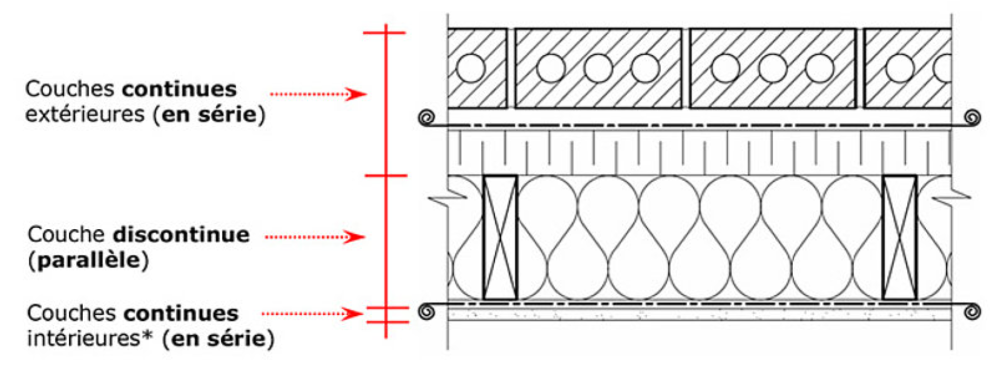
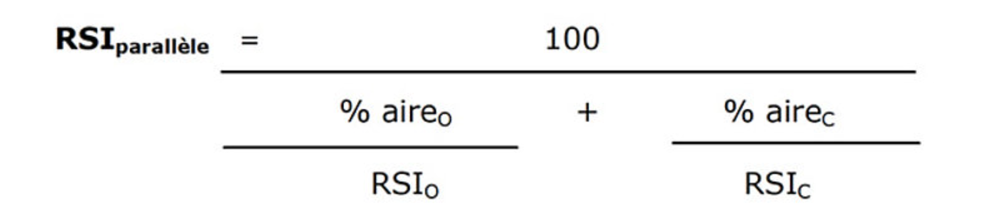
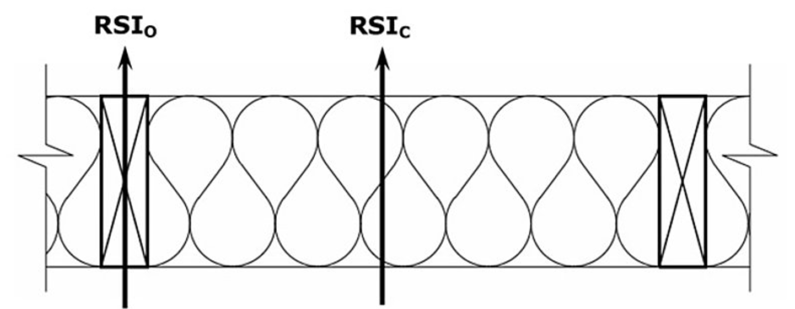
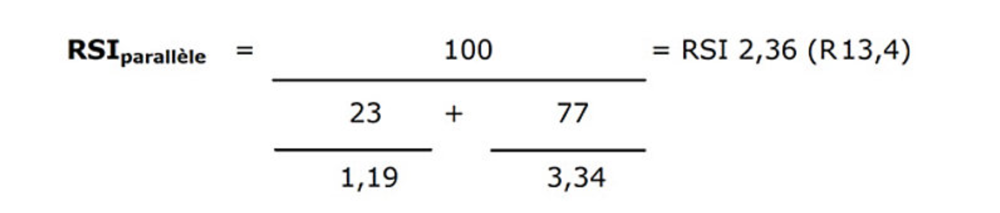
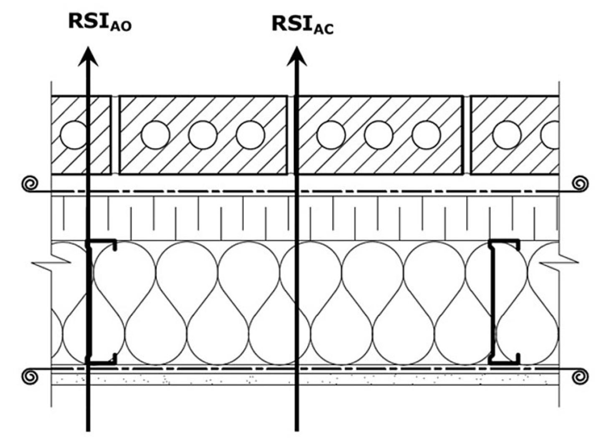
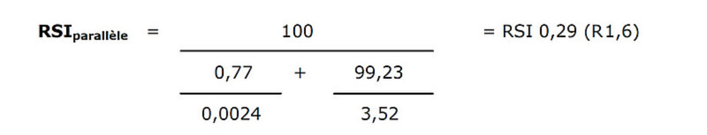

Calculer le RSI
Activer le mode plein écran
/Attachments/Calculer_le_RSI.jpg)
R.S.I : Valeur de résistance thermique (unité métrique) s’exprimant en (m2 · K) / W
La partie 11, Efficacité énergétique, du chapitre I, Bâtiment, du Code de construction, vise à améliorer l’efficacité énergétique des petits bâtiments d’habitations du Québec.
Les composantes de l’enveloppe du bâtiment doivent respecter les valeurs de résistance thermique totale prescrites. Celles-ci sont déterminées en fonction du nombre de degrés-jours de chauffage requis des municipalités où seront implantés les nouveaux bâtiments et les agrandissements visés.
En plus de la résistance thermique totale, la réglementation exige des valeurs de couverture des ponts thermiques qui sont exigées pour les murs hors sol et de sous-sol ainsi que pour les planchers hors sol en porte-à-faux au-dessus d’un espace non chauffé.
Deux Méthodes de calcul pour obtenir la valeur de Résistance Thermique Effective d’une composante
Les valeurs de résistances thermiques à utiliser, pour la conception et les calculs, sont :
- Celles résultant de tests conformes à l’une des normes énumérées à la sous-section 9.25.2. — Isolation thermique, effectués par un laboratoire reconnu ; OU
- Les valeurs du Code modèle national de l’énergie pour les habitations (CMNEH).
La méthode de calcul des valeurs de résistances thermiques doit être une méthode reconnue, telle que celles présentées dans le CMNEH
Valeurs reconnues
Un bâtiment conçu et construit en respectant les valeurs de résistance thermique effective minimales spécifiées aux tableaux 1 ou 2 ci-dessous sera considéré,
comme répondant aux exigences des articles 11.2.2.1. 1), 11.2.3.1. et 11.2.3.2. de la partie 11, Efficacité énergétique, du chapitre I, Bâtiment, du Code de construction.
Il ne sera donc pas nécessaire d’acheminer une demande de mesure différente ou équivalente à la RBQ
Vous êtes avertis !
Obligation de respecter les exigences décrites aux sections :
- 9.25 Contrôle du transfert de chaleur, des fuites d’air et de la condensation et
- 9.27 Revêtement extérieur.
Et aux paragraphes :
-
9.25.2.3.1 mise en œuvre des isolants de manière à assurer une valeur isolante sensiblement uniforme pour l’ensemble de la surface à isoler
-
9.25.3.1 présence d’un système d’étanchéité offrant une protection ininterrompue contre le passage de l’air
TABLEAU 1 - VALEURS DE RÉSISTANCES THERMIQUES TOTALES ET EFFECTIVE MINIMALES DES BÂTIMENTS SITUÉ DANS UNE MUNICIPALITÉ DONT LE NOMBRE DE DEGRÉS-JOURS SOUS 18****° C EST MOINS DE 6000
| Composante de l’enveloppe du bâtiment | RSI total exigée | R totale exigé | RSI eff accepté | R eff accepté |
|---|---|---|---|---|
| Mur hors-sol | 4,31 | 24,5 | 3,7 | 21,0 |
| Mur de fondation | 2,99 | 17,0 | 2,82 | 16 |
| Plancher hors sol | 5,20 | 29,5 | 5,02 | 28,5 |
TABLEAU 1 - VALEURS DE RÉSISTANCES THERMIQUES TOTALES ET EFFECTIVE MINIMALES DES BÂTIMENTS SITUÉ DANS UNE MUNICIPALITÉ DONT LE NOMBRE DE DEGRÉS-JOURS SOUS 18****° C EST D’AU MOINS DE 6000
| Composantes de l’enveloppe du bâtiment | RSI totale exigée | R totale exigée | RSI eff acceptée | R eff acceptée |
|---|---|---|---|---|
| Mur hors sol | 5,11 | 29,0 | 3,96 | 22,5 |
| Mur de fondation | 2,99 | 17,0 | 2,82 | 16 |
| Plancher hors sol | 5,20 | 29,5 | 5,02 | 28,5 |
R Total

Exemple de calcul de la valeur R Total d’un mur
/Attachments/calcul_2.png)
R Effectif

Exemple de calcul de la valeur R effectif d’un mur
| Composante | Valeur R vis-à-vis de l’isolant | Valeur R vis-à-vis de la structure |
|---|---|---|
| Film d’air extérieur | R 0,17 | R 0,17 |
| Brique | R 0,40 | R 0,40 |
| Lame d’Air ¾ po | R 1,02 | R 1,02 |
| Polystyrène 1 3/16 po | R 5,00 | R 5,00 |
| Isolant en natte 5½ po | R 19,08 | … |
| Montants 2X6 à 16 po c/c | … | R 6,44 |
| Lame d’aire ¾ po | R 1,02 | R 1,02 |
| Gypse ½ po | R 0,44 | R 0,44 |
| Film d’air intérieur | R 0,68 | R 0,68 |
| Rtotal | R 27,81 | R 15,17 |
| Surface occupée pour calcul | 81% | 19% |
| Reffectif | 100 / ((81/R 27,81)+(19/R 15,17)) = | R 24,03 |
Assemblage à ossature de bois
La résistance thermique effective des assemblages courants à ossature de bois doit être déterminée à l’aide de la méthode des plans isothermes (série-parallèle).
La méthode des plans isothermes (série-parallèle) permet de calculer la résistance thermique effective d’un assemblage complet en séparant les éléments qui les composent en deux catégories distinctes :
- Les couches continues (en série), composées de matériaux homogènes qui recouvrent la pleine surface de l’assemblage tels que le revêtement intermédiaire ou la finition intérieure
- Les couches discontinues (parallèles), composées de matériaux qui s’entrecoupent et qui ont des trajectoires parallèles de circulation de la chaleur tels que l’ossature ou la cavité isolée.
1 – Représentation des couches continues et discontinues pour le calcul de la résistance thermique effective selon la méthode des plans isothermes

Calcul par Étapes
Le calcul s’effectue selon les étapes suivantes :
- Déterminer la résistance thermique des couches continues (RSI série)
- Consulter le tableau 2 et déterminer la résistance propre à chacun des matériaux posés en continu, en fonction de l’épaisseur spécifique utilisée.
- Déterminer la résistance thermique effective des couches discontinues (RSI parallèle)
- Établir la résistance thermique effective de chacune des couches discontinues à l’aide de la formule du flux thermique parallèle suivante :
2 – Formule du flux thermique parallèle appliquée à une couche discontinue

Définitions
Lame d’air compartimentée
Lorsqu’une lame d’air est compartimentée par un lattage horizontal en bois, il est permis de la considérer comme étant une couche continue et de lui accorder la valeur de résistance thermique attribuable à la lame d’air. La méthode de calcul pour un assemblage à ossature de bois peut aussi s’appliquer à un assemblage en béton. Dans ce cas, la résistance thermique effective (RSI eff) de l’assemblage s’obtient en additionnant simplement la résistance thermique propre à chacune des couches continues.
RSI parallèle
Résistance thermique effective en parallèle d’une couche discontinue
RSI O
Résistance thermique de l’ossature, établie à l’aide des valeurs du tableau 2 .
RSI C
Résistance thermique de la cavité (généralement isolée) située entre les éléments d’ossature, établie à l’aide des valeurs du tableau 2.
% aire O
% de surface occupé par l’ossature, établi à l’aide des valeurs du tableau 4(valeur comprise entre 0 et 100)
% aire C
% de surface occupé par la cavité, établi à l’aide des valeurs du tableau 4 (valeur comprise entre 0 et 100).
Pour les éléments de l’ossature en bois, la valeur à utiliser est généralement celle applicable au groupe d’essences épinette-pin-sapin (spruce-pin-fir), soit 0.0085 (m2 x ºK/W)mm.
Il s’agit de multiplier cette valeur par la profondeur de l’élément en millimètres pour obtenir la résistance thermique de l’ossature (RSI O).
- Déterminer la résistance thermique effective de l’assemblage complet (RSI eff)
- La r****ésistance thermique effective de l’assemblage complet s’obtient en additionnant les résultats obtenus lors des deux étapes précédentes, ce qui se traduit par la formule suivante :
RSI eff = RSI parallèle + RSI série
RSI eff
Résistance thermique effective de l’assemblage complet à utiliser afin de déterminer la conformité de cet assemblage avec les valeurs minimales prescrites
RSI parallèle
Somme des résistances thermiques effectives des couches discontinues
RSI série
Somme des résistances thermiques des couches continues.
Exemple de calcul
Prenons l’assemblage suivant (3) :
- Lame d’air 25,4 millimètres (1 pouce)
- Polystyrène expansé de type 3 laminé d’un pare-intempérie 50,8 millimètres (2 pouces)
- Montant en bois de 38 x 140 millimètres (2 x 6) à 406 millimètres (16 pouces) d’entraxe
- Plaque de plâtre 12,7 millimètres (½ pouce)
- Revêtement extérieur en briques
- Isolant en nattes de fibre minérale comprimée RSI 3,52 (R 20)
- Pare-vapeur.
3 – Représentation d’une coupe de mur type à ossature de bois
/Attachments/coupe_mur_ossature_bois.png)
- Déterminer la résistance thermique des couches continues (RSI série)
- Établir les valeurs de résistance thermique des matériaux continus à l’aide du tableau 2 (voir l’étape 3 ci-dessus pour les résultats).
- Déterminer la résistance thermique effective des couches discontinues (RSI parallèle)
4 – Représentation des résistances thermiques des matériaux alignés avec l’ossature et la cavité isolée d’un mur type à ossature de bois pour la détermination de la résistance thermique effective des couches discontinues (RSI parallèle)

Établir les valeurs de résistance thermique des matériaux à l’aide du tableau 2 :
RSI O = 0,0085 (m2 x ºC)/W par mm x 140 mm = RSI 1,19 (R 6,76)
RSI C = RSI 3,34 (R 19,0)
Établir les pourcentages d’aire occupé par l’ossature et par la cavité isolée à l’aide des valeurs du tableau 4 :
% aire O = 23%
% aire C = 77%
Calculer la résistance thermique effective des couches discontinues à l’aide de la formule du flux thermique parallèle (5).
5 – Calcul du flux thermique parallèle appliqué aux couches discontinues

Déterminer la résistance thermique effective de l’assemblage complet. (RSIeff)
Additionner les valeurs obtenues aux deux étapes précédentes afin de déterminer la résistance thermique effective du mur (RSI eff) :
TABLEAU 3 - COMPILATION DES VALEURS DE RÉSISTANCE THERMIQUE DES COUCHES CONTINUES ET DISCONTINUES POUR L’OBTENTION DE LA VALEUR DE RÉSISTANCE THERMIQUE EFFECTIVE DE L’ASSEMBLAGE COMPLET (RSI EFF)
| Matériaux | Type de couche | Épaisseur (RSI/mm) | RSI |
|---|---|---|---|
| Film d’air extérieur | continue | Non applicable | 0,03 |
| Revêtement de briques 100 mm (4 po) | continue | 100 mm | 0,07 |
| Lame d’air 25,4 mm (1 po) | continue | 25,4 mm | 0,18 |
| Membrane pare-intempérie | continue | Non applicable | Non applicable |
| Polystyrène expansé type 3 50,8 mm (2 po) | continue | 50,8 mm X 0.030 | 1,52 |
| Montants 38 X 140 mm (2 X 6 po) en bois fibre minérale en natte comprimée, RSI 3,52 (R 20) 140 mm (6 po) | discontinue | RSI parallèle | 2,36 |
| Polyéthylène (pare-vapeur) | continue | Non applicable | Non applicable |
| plaque de plâtre 12,7 mm (½ po) | continue | 12,7 mm X 0.0061 | 0,08 |
| Film d’air intérieur | continue | Non applicable | 0,12 |
| Total | Non applicable | RSI eff | 4,36 |
Pour obtenir le résultat en valeur R (système impérial), il suffit de multiplier le résultat obtenu en RSI par un facteur de conversion de 5,678 :
R eff = RSI eff x 5,678 = 4,36 x 5,678 = 24,76
La résistance thermique effective de ce mur est donc de RSI eff = 4,36 ou R eff = 24,8
Ne pas arrondir les valeurs !
Les valeurs tirées des tableaux de l’annexe C du CNB 2010 ne doivent pas être arrondies. Seul le résultat final pour la résistance thermique effective de l’assemblage complet (RSI eff) peut être arrondi au chiffre significatif le plus près.
Assemblage à Ossature Métallique
La méthode des plans isothermes utilisée pour les assemblages à ossature de bois ne permet pas d’obtenir une précision suffisante lorsque l’ossature principale de l’assemblage est composée de montants métalliques. Dans ce cas, il faut utiliser une règle de calcul pondérée qui se traduit par la formule suivante :
RSI eff = (K1 x RSI 1) + (K2 x RSI 2)
RSI eff = résistance thermique effective de l’assemblage complet à utiliser afin de déterminer la conformité de cet assemblage avec les valeurs minimales prescrites
RSI 1 = résistance thermique effective déterminée à l’aide de la méthode du flux thermique parallèle
RSI 2 = résistance thermique effective déterminée à l’aide de la méthode des plans isothermes
K1 = coefficient d’ajustement applicable au résultat RSI 1
K2 = coefficient d’ajustement applicable au résultat RSI 2.
Les résultats obtenus à l’aide de cette méthode de calcul se comparent bien à ceux obtenus lors d’essais réels. La méthode permet d’obtenir un bon degré de précision en utilisant une valeur de résistance thermique de 0,0000161 (m2 x ºC)/W par millimètre pour l’ossature d’acier.
Calcul par Étapes
- Le calcul pour cette méthode s’effectue selon les quatre étapes suivantes :
Déterminer la résistance thermique effective selon la méthode du flux thermique parallèle (RSI 1)
Contrairement à la méthode des plans isothermes, la méthode du flux thermique parallèle ne fait aucune distinction entre les couches continues et discontinues de l’assemblage. La formule générale à utiliser pour déterminer la RSI 1 est semblable à celle décrite à l’étape 2 de la méthode de calcul applicable pour l’ossature de bois. Par contre, plutôt que d’utiliser uniquement la résistance thermique des matériaux contenus dans une couche discontinue, la formule doit être appliquée à la totalité des matériaux contenus dans l’assemblage, en fonction de leur position par rapport à l’ossature et la cavité isolée, selon la formule de l’illustration 6.
6 – Formule du flux thermique parallèle appliquée à la totalité des matériaux contenus dans l’assemblage
/Attachments/flux_thermique_parallele.png)
RSI 1 = résistance thermique effective déterminée à l’aide de la méthode du flux thermique parallèle.
RSI AO = somme des résistances thermiques de tous les matériaux alignés avec l’ossature, établie à l’aide des valeurs du tableau 2.
RSI AC = somme des résistances thermiques de tous les matériaux alignés avec la cavité isolée, établie à l’aide des valeurs du tableau 2.
% aire AO = % de surface occupé par l’ossature, établi à l’aide des valeurs du tableau 5 (valeur comprise entre 0 et 100).
% aire AC = % de surface occupé par la cavité, établi à l’aide des valeurs du tableau 5 (valeur comprise entre 0 et 100).
- Déterminer la résistance thermique effective selon la méthode des plans isothermes (RSI2).
La valeur RSI 2 correspond à la résistance thermique effective de l’assemblage obtenue par la méthode des plans isothermes.
Il s’agit d’appliquer les trois étapes décrites précédemment pour la méthode de calcul applicable aux assemblages à ossature de bois, mais en s’assurant d’utiliser les valeurs propres à l’ossature métallique.
Il faut donc utiliser une valeur de résistance thermique de 0,0000161 (m2 x ºC)/W par millimètre pour l’acier, ainsi que les pourcentages d’aire propres à ce type d’ossature indiqués dans le tableau 5.
- Déterminer les coefficients d’ajustement (K1 et K2)
Les coefficients d’ajustement K1 et K2 sont déterminés à l’aide du tableau 6 de l’annexe C du CNB 2010, en fonction de l’espacement prévu entre les éléments d’ossature.
- Déterminer la résistance thermique effective de l’assemblage complet (RSI eff) Enfin, la résistance thermique effective de l’assemblage complet permettant de déterminer la conformité de celui-ci s’obtient en insérant les résultats obtenus lors des trois étapes précédentes à l’intérieur de la formule pondérée mentionnée initialement, soit: RSI eff = (K1 x RSI1) + (K2 x RSI2)
Exemple de calcul
Reprenons le même assemblage mural que celui présenté pour l’ossature de bois, mais avec une ossature d’acier cette fois-ci :
- Lame d’air 25,4 millimètres (1 pouce).
- Polystyrène expansé de type 3 laminé d’un pare-intempérie 50,8 millimètres (2 pouces).
- Montant en acier de 41 x 152 millimètres (2 x 6) à 406 millimètres (16 pouces) d’entraxe.
- Plaque de plâtre 12,7 millimètres (½ pouces).
- Revêtement extérieur en briques.
- Isolant en nattes de fibre minérale comprimée RSI 3,52 (R 20) dans la cavité.
- Pare-vapeur.
7 – Représentation d’une coupe de mur type à ossature métallique
/Attachments/coupe_mur_ossature_metallique.png)
Déterminer la résistance thermique effective selon la méthode du flux thermique parallèle (RSI 1)
8 – Représentation des résistances thermiques des matériaux alignés avec l’ossature et la cavité isolée d’un mur type à ossature métallique pour déterminer la résistance thermique effective selon la méthode du flux parallèle (RSI1)

Déterminer les valeurs de résistance thermique des matériaux à l’aide du tableau 2, puis additionner ces valeurs pour tous les matériaux :
- Aligner avec l’ossature afin de déterminer la RSI AO
- Aligner avec la cavité isolée afin déterminer la RSI AC
TABLEAU 4 - COMPILATION DES VALEURS DE RÉSISTANCE THERMIQUE DES MATÉRIAUX ALIGNÉS AVEC L’OSSATURE ET LA CAVITÉ ISOLÉE POUR L’OBTENTION DE LA VALEUR DE RÉSISTANCE THERMIQUE EFFECTIVE SELON LA MÉTHODE DU FLUX THERMIQUE PARALLÈLE(RSI 1)
| Matériaux | Épaisseur (RSI/mm) | RSI (aligné avec l’ossature) | RSI (aligné avec la cavité isolée) |
|---|---|---|---|
| Film d’air extérieur | Non applicable | 0,03 | 0,03 |
| Revêtement de briques 100 mm (4 po) | 100 mm | 0,07 | 0,07 |
| Lame d’air 25,4 mm (1 po) | 25,4 mm | 0,18 | 0,18 |
| Membrane pare-intempérie | Non applicable | Non applicable | Non applicable |
| Polystyrène expansé type 3 50,8 mm (2 po) | 50,8 mm X 0,030 | 1,52 | 1,52 |
| Montants 41 X 152 mm en acier (2 X 6 po) | 152 mm X 0,000061 | 0,0023 | Non applicable |
| Fibre minérale en nattes comprimée, RSI 3,52 (R 20) 152 mm (6 po) | 152 mm | Non applicable | 3,52 |
| polyéthylène (pare-vapeur) | Non applicable | Non applicable | Non applicable |
| plaque de plâtre 12,7 mm (½ po) | 127 mm X 0,0061 | 0,08 | 0,08 |
| Film d’air intérieur | Non applicable | 0,12 | 0,12 |
| Total | 2,00 | 5,52 |
On obtient ainsi les valeurs suivantes :
RSI AO = RSI 2,00 (R 11,4)
RSI AC = RSI 5,52 (R 31,3)
Établir les pourcentages d’aires occupés par l’ossature et par la cavité isolée à l’aide du tableau 5 :
% aire AO = 0,77%
% aire AC = 99,23%
Calculer la résistance thermique effective à l’aide de la formule du flux thermique parallèle (RSI 1)
9 – calcul du flux thermique parallèle appliqué à la totalité des matériaux contenus dans l’assemblage
/Attachments/calcul_du_flux_thermique_parallèle_appliqué.png)
Déterminer la résistance thermique effective selon la méthode des plans isothermes (RSI 2)
Déterminer la résistance thermique effective propre aux couches discontinues (RSI parallèle)
10 – Représentation des résistances thermiques des matériaux alignés avec l’ossature et la cavité isolée d’un mur type à ossature métallique pour déterminer la résistance thermique effective des couches discontinues (RSI parallèle)
/Attachments/resistance_thermique_materiaux_alignes(1).png)
Établir les valeurs de résistance thermique des matériaux à l’aide du tableau 2 :
RSI O = 0,0000161 (m2 x ºC)/W par mm x 152 mm = RSI 0.0024 (R 0,014)
RSI C = RSI 3,52 (R 20,0)
Établir les pourcentages d’aire occupés par l’ossature et par la cavité isolée à l’aide des valeurs du tableau 4 :
% aire O = 0,77%
% aire C = 99,23%
Calculer la résistance thermique effective des couches discontinues à l’aide de la formule du flux thermique parallèle
11 – calcul du flux thermique parallèle appliqué aux couches discontinues

Additionner cette valeur de résistance thermique propre aux couches discontinues (RSI parallèle) avec celles des couches continues prédéterminées lors de la première étape :
TABLEAU 5 - COMPILATION DES VALEURS DE RÉSISTANCE THERMIQUE DES COUCHES DISCONTINUES ET CONTINUES POUR L’OBTENTION DE LA VALEUR DE RÉSISTANCE THERMIQUE EFFECTIVE SELON LA MÉTHODE DES PLANS ISOTHERMES (RSI 2)
| Matériaux | Type de couche | Épaisseur (RSI/mm) | RSI |
|---|---|---|---|
| Film d’air extérieur | continue | Non applicable | 0,03 |
| Revêtement de brique 100 mm (4 po) | continue | 100 mm | 0,07 |
| Lame d’aire 25,4 mm (1 po) | continue | 25,4 mm | 0,18 |
| Membrane pare-intempérie | continue | Non applicable | Non applicable |
| Polystyrène expansé type 3, 50,8 mm (2 po) | continue | 50,8 mm X 0,030 | 1,52 |
| Montants 41 X 152 mm en acier (2 X 6) Fibre minérale en nattes comprimée, RSI 3,52 (R 20) 152 mm (6 po) | discontinue | RSI parallèle | 0,29 |
| Polyéthylène (pare-vapeur) | continue | Non applicable | Non applicable |
| Plaque de plâtre 12,7 mm (½ po) | continue | 12,7 mm X 0,0061 | 0,08 |
| Film d’air intérieur | continue | Non applicable | 0,12 |
| Total | Non applicable | RSI eff | 2,29 |
La valeur de résistance thermique effective obtenue par la méthode des plans isothermes (RSI 2) est donc de RSI 2,29 (R 13,0)
Puis, déterminer les coefficients d’ajustement (K1 et K2)
À l’aide du tableau 6, on obtient les valeurs suivantes pour un assemblage d’entraxe inférieur à 500 millimètres comportant un revêtement intermédiaire isolant :
K1 = 0,40 et K2 = 0,60
Déterminer enfin la résistance thermique effective de l’assemblage complet (RSI eff)
Calculer la résistance thermique effective de l’assemblage complet en insérant les valeurs déterminées lors des trois étapes précédentes à l’intérieur de la formule pondérée propre à l’ossature métallique :
RSI eff = (K1 x RSI1) + (K2 x RSI2) = (0,40 x 5,46) + (0,60 x 2,29) = 3,56
R eff = RSI eff x 5,678 = 3,56 x 5,678 = 20,21
La résistance thermique effective de ce mur est donc de RSI eff = 3,56 ou R eff = 20,2
Ne pas arrondir les valeurs !
Les valeurs tirées des tableaux ne doivent pas être arrondies. Seul le résultat final pour la résistance thermique effective de l’assemblage complet (RSI eff) peut être arrondi au chiffre significatif le plus près.